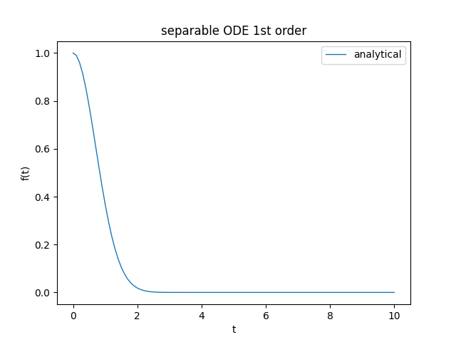
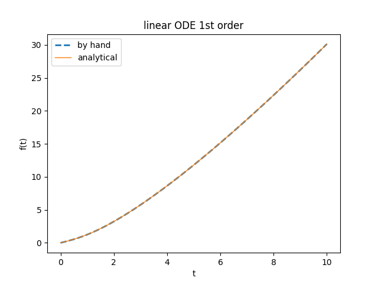

Experiments with SymPy to solve first-order ordinary differential equations
This website deals mainly with numerical computation and in other posts in which we have dealt with the topic
of differential equations have indeed proposed appropriate numerical solutions (see Ordinary differential equation solvers in Python);
however, when it is possible to determine an analytical solution would generally prefer it to the numerical one both because it is exact (and not approximate)
and also for performance reasons. In the Python ecosystem there is the library SymPy
which is a symbolic mathematics library and its goal is to be a complete computer algebra system (CAS).
This post shows how to use SymPy to analytically solve ordinary differential equations (abbreviated ODE) in Python
and also with "lambdification" we show how to go from symbolic representation to a Python "callable" object and then perform numerical calculations
from exact analytical solutions.
All the examples in this post and their solutions have been provided by Prof. Fausta D'Acunzo of Preparazione 2.0:
each example falls into some known type of first-order ODE and for each example we will compare the correct solution, computed by hand by Preparazione 2.0,
with the one obtained from the SymPy library.
Install and use SymPy
To install SymPy with pip simply run:
$ pip install sympyconda on Anaconda run:$ conda install sympySymPy is also available online at live.sympy.org, so there is no need to install it locally. If you use the online version please note that the following imports are pre-executed:
from __future__ import division
from sympy import *
x, y, z, t = symbols('x y z t')
k, m, n = symbols('k m n', integer=True)
f, g, h = symbols('f g h', cls=Function)To get the code see paragraph Download the complete code at the end of this post.
Conventions
In this post the conventions used are as follows:
- $t$ is the independent variable
- $f$ is the unknown function
- $f$ is intended to be functions of $t$, so $f=f(t)$
- $f'$ is the first derivative of x with respect to $t$ in Lagrange notation
- $\frac{\dee f(t)}{\dee t}$ is the first derivative of x with respect to $t$ in Leibniz notation
Separable ODE (first example)
Let the following Cauchy problem be given: $$ \begin{equation} \begin{cases} f' = -2 \mkern3mu t \mkern3mu f \\ f(0) = 1 \end{cases} \end{equation} $$ which rewritten in Leibniz notation (which is the one used by SymPy) becomes: $$ \begin{equation} \begin{cases} \frac{\dee f(t)}{\dee t} = -2 \mkern3mu t \mkern3mu f(t) \\ f(0) = 1 \end{cases} \end{equation} $$ whose exact solution, provided by Preparazione 2.0, is: $$f(t) = e^{-t^2}$$ With SymPy the above equation is stated as follows:
eq = Eq(f(t).diff(t), -2 * t * f(t))
print('ODE class: ', classify_ode(eq)[0])
ODE class: separableTo solve the proposed Cauchy problem execute the following Python statement:
an_sol = dsolve(eq, ics={f(0): 1})
pprint(an_sol) 2
-t
f(t) = eTo switch from symbolic to numerical computation, we need to perform a "lambdification" of the right-hand side of the solution:
lmbd_sol = lambdify(t, an_sol.rhs)t_range = [0., 0.5, 1., 1.5, 2.0]
print([lmbd_sol(ti) for ti in t_range])[1.0,
0.7788007830714049,
0.36787944117144233,
0.10539922456186433,
0.01831563888873418]Here the link to the code on GitHub.

Graph of the function $f(t)$, solution of the previous Cauchy problem.
Separable ODE (second example)
Let the following Cauchy problem be given: $$ \begin{equation} \begin{cases} f' = \frac{t-1}{f + 1} \\ f(0) = 0 \end{cases} \end{equation} $$ which rewritten in Leibniz notation (which is the one used by SymPy) becomes: $$ \begin{equation} \begin{cases} \frac{\dee f(t)}{\dee t} = \frac{t-1}{f(t) + 1} \\ f(0) = 0 \end{cases} \end{equation} $$ whose exact solution, provided by Preparazione 2.0, is: $$f(t) = -t$$ With SymPy the above equation is stated as follows:
eq = Eq(f(t).diff(t), (t-1)/(f(t)+1))
print('ODE class: ', classify_ode(eq)[0])ODE class: separableTo solve the proposed Cauchy problem execute the following Python statement:
an_sol = dsolve(eq, ics={f(0): 0})
pprint(an_sol) ______________
╱ 2
f(t) = ╲╱ t - 2⋅t + 1 - 1The transition from symbolic to numerical computation and the plotting of the graph are practically identical to the previous case and refer to the code for details.
Here the link to the code on GitHub.
Homogeneous ODE
Let the following Cauchy problem be given: $$ \begin{equation} \begin{cases} f' = \frac{t^2+f^2}{tf} \\ f(2) = 2 \end{cases} \end{equation} $$ which rewritten in Leibniz notation (which is the one used by SymPy) becomes: $$ \begin{equation} \begin{cases} \frac{\dee f(t)}{\dee t} = \frac{t^2+f(t)^2}{tf(t)} \\ f(2) = 2 \end{cases} \end{equation} $$ whose exact solution, provided by Preparazione 2.0, is: $$f(t) = t \sqrt{2 \ln{\frac{t}{2}} + 1} $$ With SymPy the above equation is stated as follows:
eq = Eq(f(t).diff(t), (t**2 + f(t)**2)/(t * f(t)))
print('ODE class: ', classify_ode(eq)[0])ODE class: BernoulliTo solve the proposed Cauchy problem by forcing the library to use the desired class, run the following Python statement:
an_sol = dsolve(eq, hint='1st_homogeneous_coeff_best', ics={f(2):2})
pprint(an_sol) ______________________
╱ ⎛ 2⎞
f(t) = t⋅╲╱ log⎝t ⎠ - log(4) + 1The transition from symbolic to numerical computation and the plotting of the graph are practically identical to the previous case and refer to the code for details.
Here the link to the code on GitHub.
Linear ODE lineare (first example)
Let the following Cauchy problem be given: $$ \begin{equation} \begin{cases} f' = 3 \mkern3mu t^2 \mkern3mu f + t \mkern3mu e^{t^3} \\ f(0) = 1 \end{cases} \end{equation} $$ which rewritten in Leibniz notation (which is the one used by SymPy) becomes: $$ \begin{equation} \begin{cases} \frac{\dee f(t)}{\dee t} = 3 \mkern3mu t^2 \mkern3mu f(t) + t \mkern3mu e^{t^3} \\ f(0) = 1 \end{cases} \end{equation} $$ whose exact solution, provided by Preparazione 2.0, is: $$f(t) = (\frac{t^2}{2} + 1) \mkern3mu e^{t^3}$$ With SymPy the above equation is stated as follows:
eq = Eq(f(t).diff(t), 3 * t**2 * f(t) + t * exp(t**3))
print('ODE class: ', classify_ode(eq)[0])ODE class: 1st_exactTo solve the proposed Cauchy problem by forcing the library to use the desired class, run the following Python statement:
an_sol = dsolve(eq, hint='1st_linear', ics={f(0): 1})
pprint(an_sol) / 2 \ / 3\
|t | \t /
f(t) = |-- + 1|*e
\2 / The transition from symbolic to numerical computation and the plotting of the graph are practically identical to the previous case and refer to the code for details.
Here the link to the code on GitHub.
Linear ODE lineare (second example)
Let the following Cauchy problem be given: $$ \begin{equation} \begin{cases} f' = \frac{t}{1 + t^2} \mkern3mu f + 1 \\ f(0) = 0 \end{cases} \end{equation} $$ which rewritten in Leibniz notation (which is the one used by SymPy) becomes: $$ \begin{equation} \begin{cases} \frac{\dee f(t)}{\dee t} = \frac{t}{1 + t^2} \mkern3mu f(t) + 1 \\ f(0) = 0 \end{cases} \end{equation} $$ whose exact solution, provided by Preparazione 2.0, is: $$f(t) = \sqrt{1 + t^2} \ln(t + \sqrt{1 + t^2})$$ With SymPy the above equation is stated as follows:eq = Eq(f(t).diff(t), (t / (1 + t**2)) * f(t) + 1)
print('ODE class: ', classify_ode(eq)[0])ODE class: 1st_exactTo solve the proposed Cauchy problem by forcing the library to use the desired class, run the following Python statement:
an_sol = dsolve(eq, hint='1st_linear', ics={f(0): 0})
pprint(an_sol) 2
t *asinh(t) + asinh(t)
f(t) = ----------------------
________
/ 2
\/ t + 1 The proof in the graph of its solutions as shown in the figure.
Here the link to the code on GitHub.

Graphs of the function $f(t)$, solution of the previous Cauchy problem
calculated with the expected formula and with the one obtained from the library and are naturally identical.
calculated with the expected formula and with the one obtained from the library and are naturally identical.
Download of the complete code
The complete code is available at GitHub.
These materials are distributed under MIT license; feel free to use, share, fork and adapt these materials as you see fit.
Also please feel free to submit pull-requests and bug-reports to this GitHub repository or contact me on my social media channels available on the top right corner of this page.